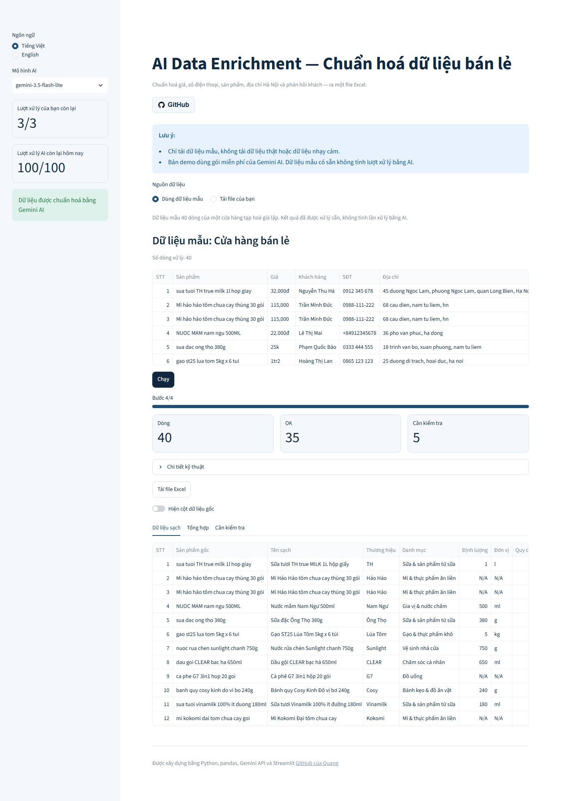
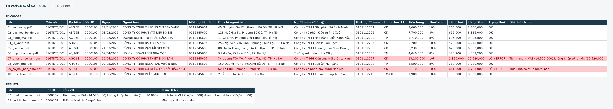
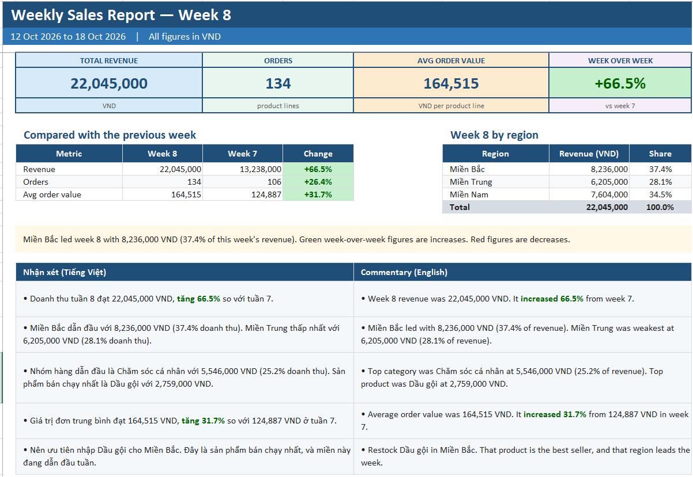

Web data scraping
I collect public prices, product lists, or headlines from a website and save them in Excel, so you do not have to copy them by hand.
Python automation & data freelancer: web scraping, data cleaning, Excel reports, PDF extraction, AI data enrichment
Repetitive data work I can take off your week.
I collect public prices, product lists, or headlines from a website and save them in Excel, so you do not have to copy them by hand.
I turn a messy spreadsheet into one clean table. Names, dates, phone numbers, and amounts that were typed in different ways all follow the same format.
I turn a raw sales file into an Excel report ready to share, with totals, charts, and a short written summary.
I read invoice PDFs, put the key figures into Excel, and mark any total or tax code that does not add up.
I fill in product names, addresses, and the tone of customer comments, then give you an Excel file where anything unsure is marked for a person to check.
Six finished tools. Open the code for any of them, and try the live demo where there is one.

(opens in a new tab)A messy shop spreadsheet becomes a clean Excel file, with prices and phone numbers tidied and product names, addresses, and the tone of customer comments filled in.

(opens in a new tab)A folder of PDF invoices becomes one Excel file, and any invoice whose total, tax, or amount in words does not match is marked for review.

(opens in a new tab)A flat sales list becomes a weekly Excel report with totals, a comparison to the week before, breakdowns, charts, and a short comment in Vietnamese and English.
Orders typed in different ways, including names, dates, amounts, cities, phone numbers, and duplicate rows, become one clean table plus a short note of every change.
Headlines from the CafeF stock-market page are saved to Excel with the title, link, time, and a short summary, without copying the full articles.
Public toy prices, discounts, and stock from the MyKingdom shop are saved to Excel, ready to compare with the next file you collect.
Three steps, from a sample of your data to a tool you can run.
A spreadsheet, a few PDFs, or a link to a public page is enough.
You see the result on your own sample before the tool is finished.
You get the finished tool, plain instructions, and help if a change is needed.
If a data task keeps coming back, start with a sample of your file.